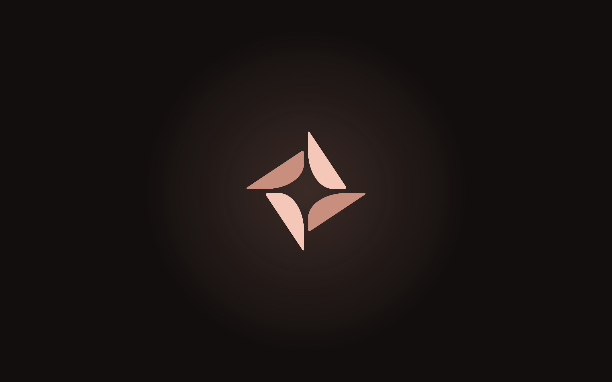

Brand kit. A desk for your terminals.
logo-horizontal-color.svglogo-horizontal-color-on-light.svglogo-stacked-color.svglogo-stacked-color-on-light.svgmark-color.svgmark-color-on-light.svgwordmark-color.svgwordmark-color-on-light.svglogo-horizontal-black.svglogo-horizontal-white.svglogo-stacked-black.svglogo-stacked-white.svgmark-black.svgmark-white.svgpng/social/og-image.pngpng/social/github-social-preview.pngpng/banner/banner-readme.pngpng/banner/banner-x.pngpng/banner/banner-linkedin.pngpng/social/avatar-800.pngsvg/pattern/pattern-tile.svg
png/wallpaper/wallpaper-2560x1600.png#120E0D#1E1715#F4C7B8#C98F7E#C4826F#8E5646#FBF1EC